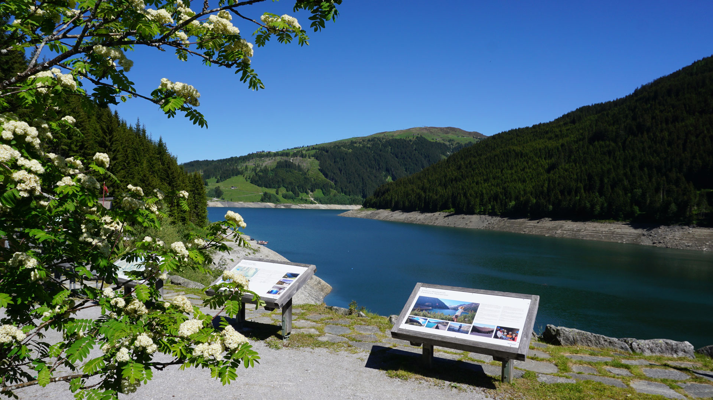
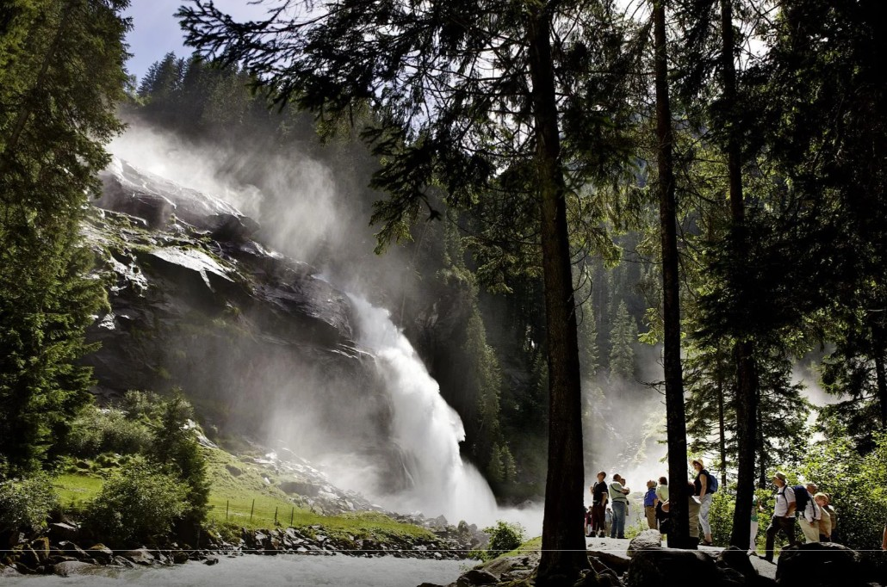
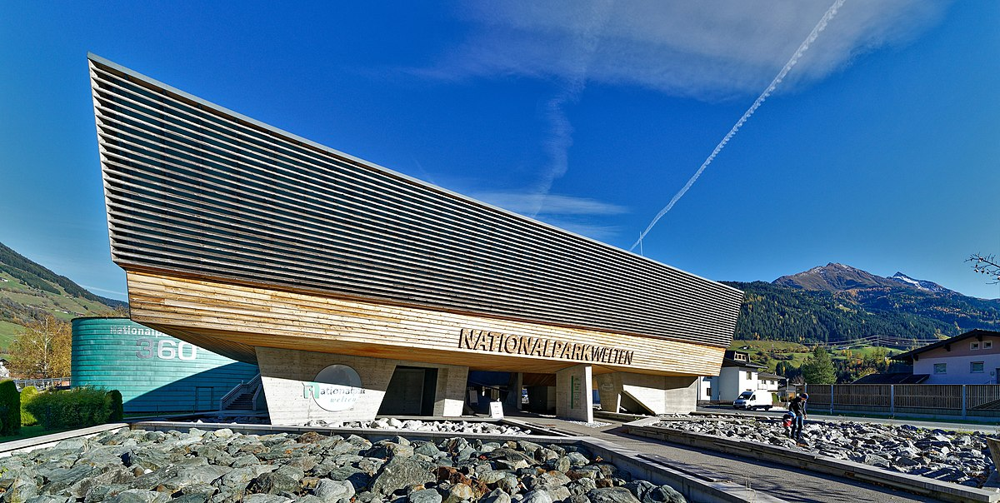
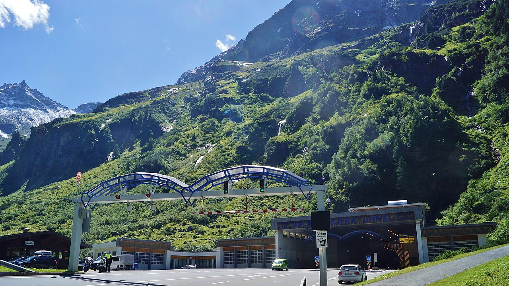
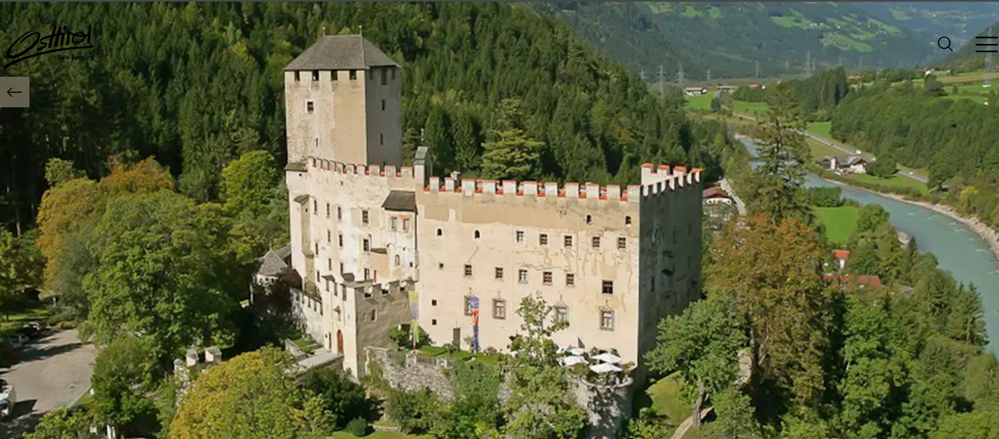
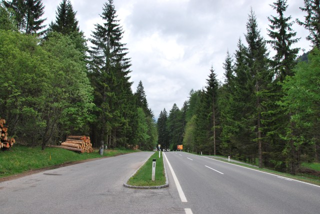
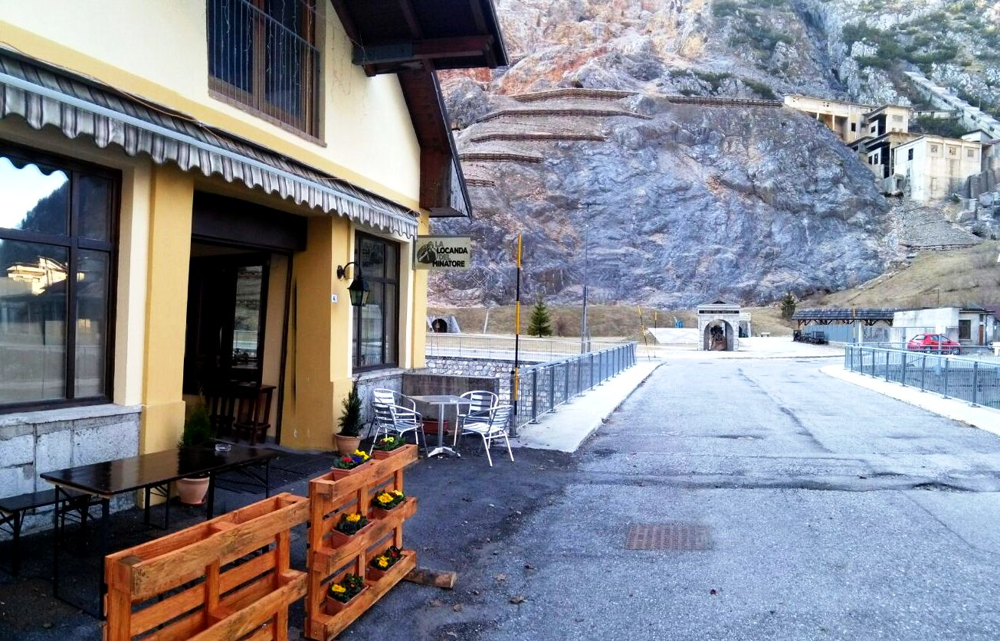
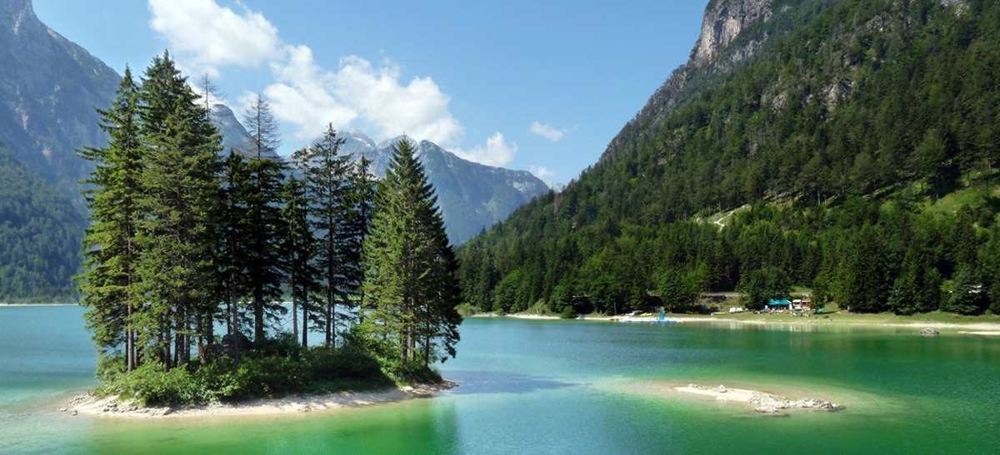
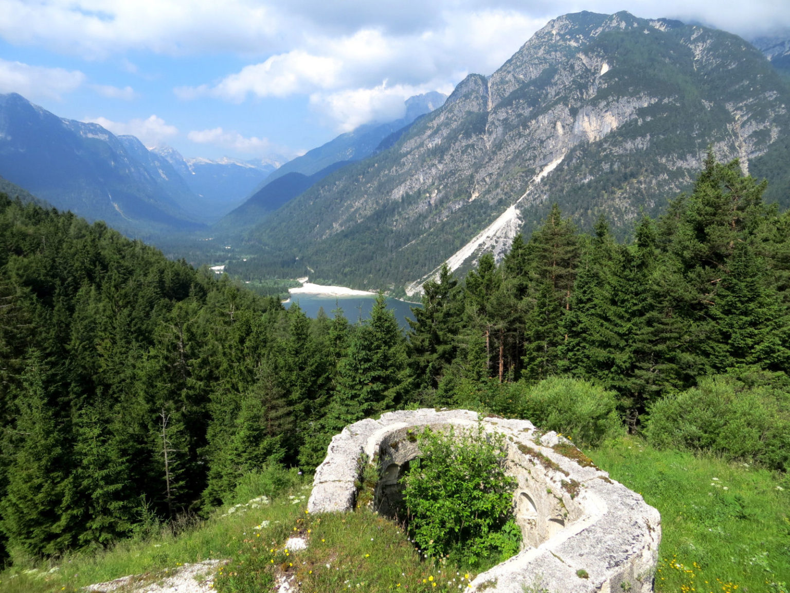
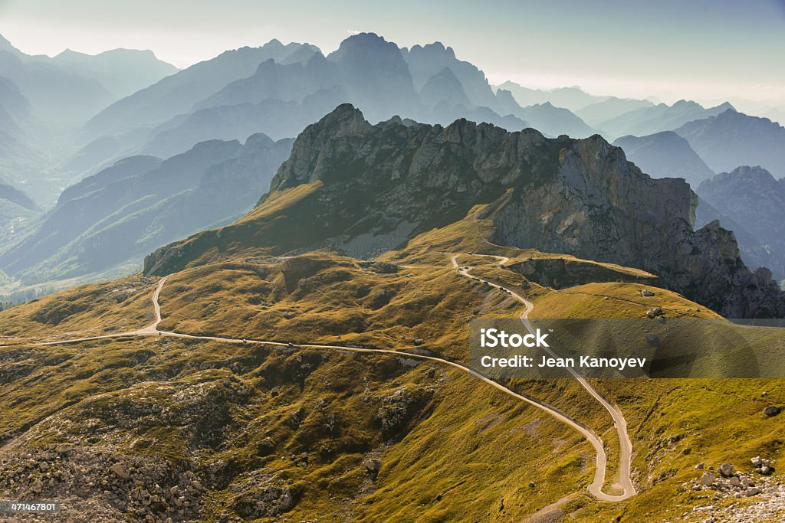

DAY08 – Tauern · Kelet Tirol · Karintia · Júliai Alpok
A mérés automatikusan indul oldalnyitáskor, majd 5 mp múlva frissít.
A távolságok minden célpontnál frissülnek.
1. Speicher Durlaßboden
mérés: várakozás
távolság: —
Mesterséges magashegyi víztározó a Gerlos völgyében, alpesi legelők és hegygerincek között.

2. Krimmler Wasserfälle, Wasserfallblick
mérés: várakozás
távolság: —
Panorámapont Közép Európa egyik legnagyobb vízesésére, három lépcsőben közel 380 méteres eséssel.

3. Nationalparkzentrum Hohe Tauern, Mittersill
mérés: várakozás
távolság: —
A Hohe Tauern Nemzeti Park látogatóközpontja interaktív kiállítással és panoráma élményekkel.

4. Felbertauern alagút déli portál
mérés: várakozás
távolság: —
Több mint 5 km-es közúti alagút a főgerinc alatt, egész éves átkelési lehetőséggel.

5. Schloss Bruck, Lienz felett
mérés: várakozás
távolság: —
Középkori vár a Dráva völgye felett, múzeummal és erős panorámával a Lienzi Dolomitokra.

6. Gailbergsattel
mérés: várakozás
távolság: —
Kb. 980 m-es hágó a Dráva és a Gail völgye között, régi átkelői jelentőséggel.

7. Nassfeldpass, Passo di Pramollo
mérés: várakozás
távolság: —
Kb. 1530 m-es alpesi átkelő Karintia és a friuli oldal között, ma erős turisztikai infrastruktúrával.

8. The Inn of the Miner, Cave del Predil
mérés: várakozás
távolság: —
Bányász tematikájú vendéglő egy egykori ólom és cink bányásztelepülésen.

9. Lago del Predil
mérés: várakozás
távolság: —
Smaragdzöld alpesi tó kb. 970 m magasan, glaciális völgyben, legendákkal és határvidéki emlékekkel.

10. Passo del Predil
mérés: várakozás
távolság: —
Hágó Olaszország és Szlovénia között, katonai és kereskedelmi nyomvonalon, határvidéki emlékekkel.

11. Mangartsko sedlo, Mangart út
mérés: várakozás
távolság: —
Szlovénia legmagasabban vezető közútja, meredek szerpentinekkel a Júliai Alpok ikonikus mészkő csúcsai alatt.

12. Camp Špik, Gozd Martuljek
mérés: várakozás
távolság: —
Célkemping fenyvesben, kilátással a Špik csoport sziklatornyaira és a Júliai Alpokra.